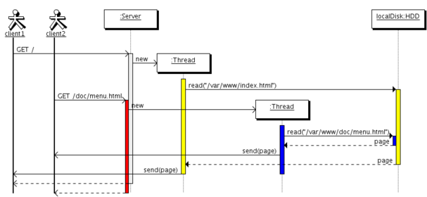

|
Hoe werkt een webpagina? |
|---|
|
Goede vraag, ik zal het een uitleggen in een klein verhaaltje |
|
De gebruiker |
Browser |
De webserver |
Document root |
|---|---|---|---|
|
Je hebt dus een user, een gebruiker die iets wil doen op het internet, je zou dus kunnen zeggen dat hij iets wil requesten, dus bijvoorbeeld een pagina of een plaatje |
De browser, hij krijgt eigenlijk een actie van de gebruiker en de browser moet hier iets mee gaan doen. De browser ontvangt dus de actie en zal een http-request sturen naar de webserver voor de bestanden die hij graag zou willen zien |
De webserver ontvangt dan deze http-request en zal dan proberen te leveren wat de browser vraagt, indien de webserver, dus bijvoorbeeld xampp, dat kan voltooien, dan zal hij sturen 200 OK met daarbij heel veel data dat later weer gebruikt kan worden om de pagina te laten zien. Wanneer dee webserver niet aan de request kan voldoen, dan zal hij sturen, 404 Error. De methode die daarbij wordt verzonden is GET |
De document root zijn de documenten in de root van de webserver, deze bestanden staan dus ook niet op jouw computer en worden hier dus opgeslagen. Als de webserver kan voldoen aan de gebruiker dan zullen de bestanden m.b.v. 200 OK worden verzonden naar de gebruiker |
| In een plaatje |
|---|
|
In dit plaatje wordt ook wel een web sequence diagram weergegeven, hierin kan je zien wat voor stappen er worden gemaakt voordat een bepaalde request door een gebruiker is voltooid.  |
Wat gebeurt er als je op een pagina komt met een plaatje met een bepaalde link?
| User | Browser | De webserver | Document root |
|---|---|---|---|
|
De user komt op de pagina, oftewel surft naar bijv. index.html -> |
De browser zal dat een http request sturen naar de webserver -> |
De webserver kijkt in de document root of de bestanden er ook wel zijn -> |
De document root stuurt de bestanden terug naar de webserver (naar beneden) |
|
De gebruiker ziet index.html |
<- De browser laat index.html zien aan de gebruiker (en naar beneden) |
<- De websturen duurt de http-request, nu een reponse naar de browser |
<- De webserver stuurt een 200 OK of een 404 ERROR response |
|
-> Staat een plaatje op de browser de browser stuurt een request naar de webserver |
-> Webserver kijkt weer of hij hier aan kan voldoen, dus OK of ERROR |
Document root stuurt de bestanden terug, dus plaatje naar de webserver (weer omlaag) |
|
|
<- Gebruiker ziet nu ook het plaatje op het scherm |
< Browser laat het plaatje zien naar de gebruiker |
<- Webserver stuurt het plaatje naar de browser (http-response) |
<- Stuurt het plaatje naar de webserver |